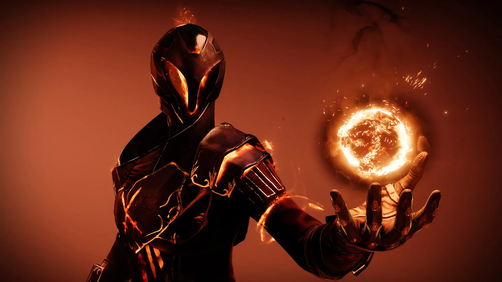
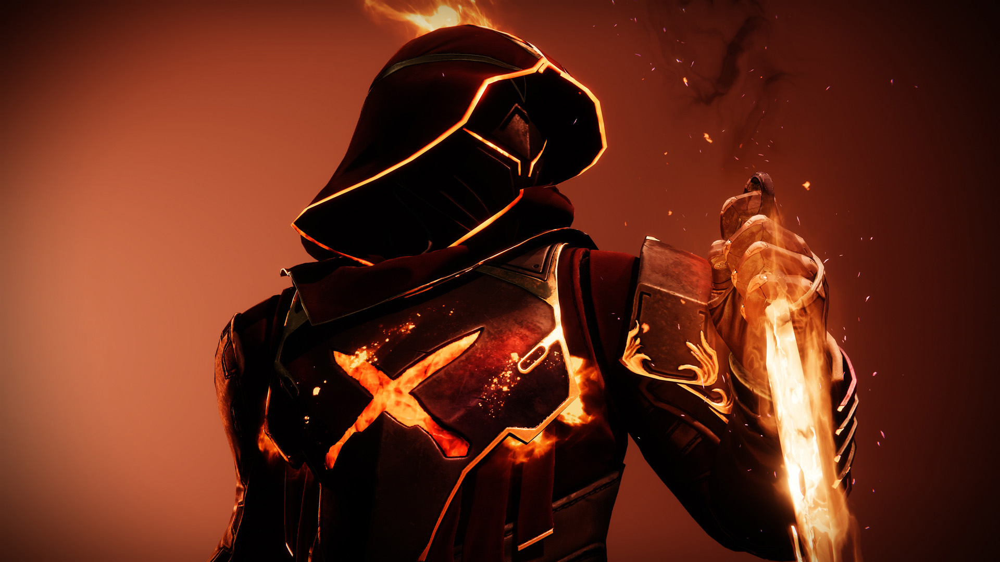
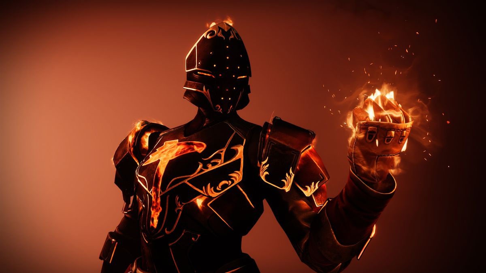

Solar
Arcano

Caçador

Titan
Quando a vontade de mergulhar no bendito calor chegava no climax emocionate, as rédeas se retesavam e o martelo caía. Caía sobre os perversos, sobre os que desejavam mal ao sistema, sobre a terra, batizando-a em fogo
Quando a fumaça se dissipava, não restava rédea. O fogo começava a apagar até que mal sobrasse um martelo entre nós. A ordem da justiça, aqueles que desejam fender as estrelas, jaziam dissolvidos em emio ao crepitar das brazas.
Quando os ventos mudavam, as brasas se atiçavam e geravam uma nova chama. O fogo cresce para os que buscam a destruição à espreita nas sombras, para purificá-la à luz do sol.
Quando a chama chega ao zênite, nada escapa do seu calor. Ergam-se, vocês que brandem o martelo! Ainda restam Sóis para demolir.